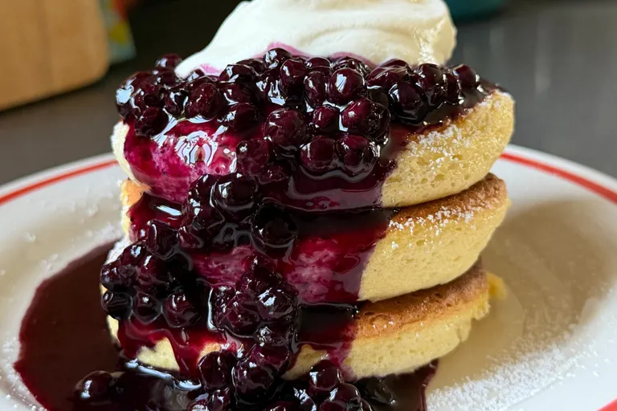

Home
Souffle Style Pancakes

Description
These souffle style pancakes are made by folding an egg white meringue into the batter.
The batter is then piped into tall mounds in a pan and steamed. Served with a quick and easy blueberry sauce.
Ingredients
Pancakes
- 1/4 cup white sugar, divided
- 2 large eggs, separated
- 1 tablespoon milk
- 1 teaspoon vanilla extract
- 1 pinch salt
- 1/4 cup all-purpose flour
- 1/2 teaspoon baking powder
- 1/4 teaspoon cream of tartar
- whipped cream, for serving
Blueberry Sauce
- 1 cup frozen blueberries
- 2 tablespoons water
- 1 teaspoon lemon juice
- 2 tablespoons white sugar